Zajetí, které změnilo směr
Válka ho odvedla k olomouckému 54. pěšímu pluku. Zajetí u Stanislavi ale otevřelo druhou dráhu: ruské legie, 7. střelecký pluk Tatranský a nakonec elitní I. úderný prapor.
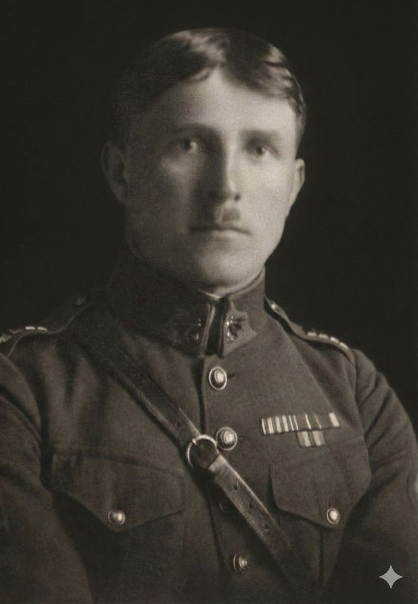
major pěchoty · ruský legionář · úderník
Sledujte stopu moravského studenta, který prošel císařskou armádou, ruskými legiemi, obranou hranic i poslední palbou v Dejvicích.
Dvě vrstvy jednoho příběhu
Nejde jen o archiv souborů. Web skládá Žižkův život do čitelné cesty: jistá fakta, sporná místa, mapu anabáze, slovník pojmů a román, ve kterém se z databázového záznamu stává živá postava.
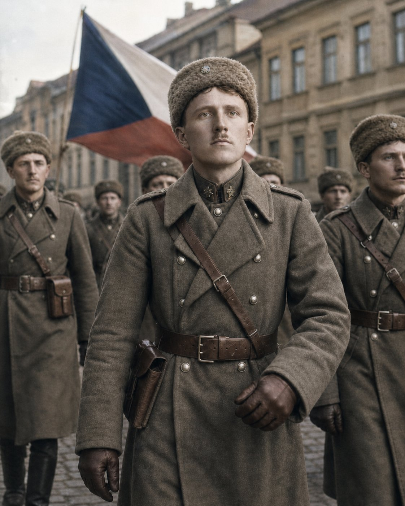
Obrazová rekonstrukce
Obrazy mají čtení zrychlit, ne předstírat archivní důkaz. Drží náladu románu: sníh, ešalony, stráže, útoky, nádraží a návrat domů po cestě, která byla delší než válka sama.
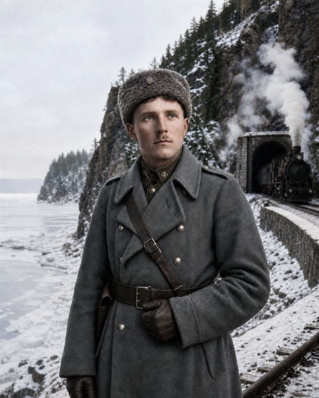
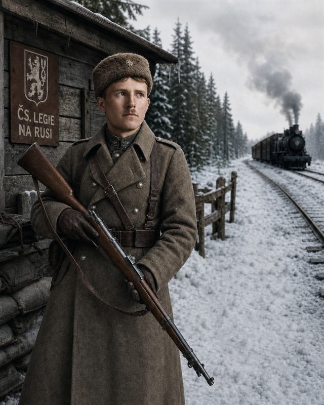
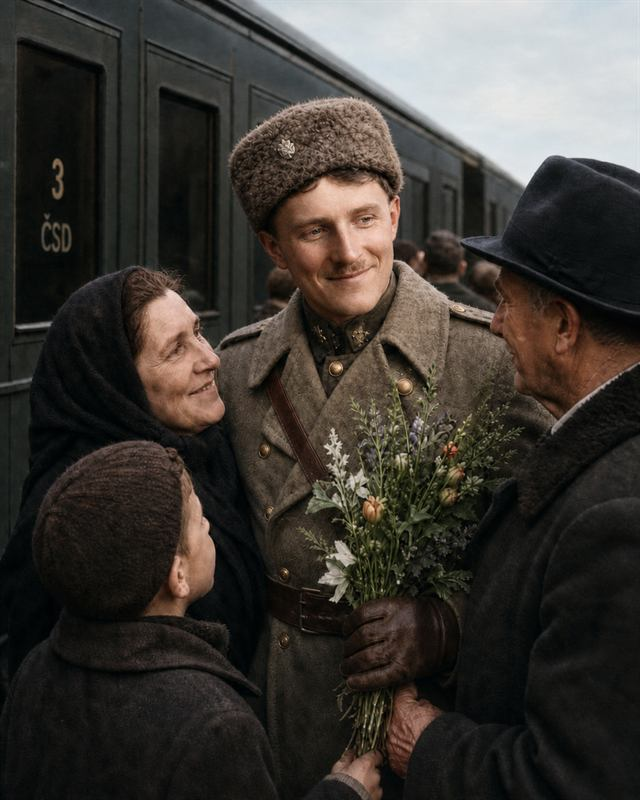
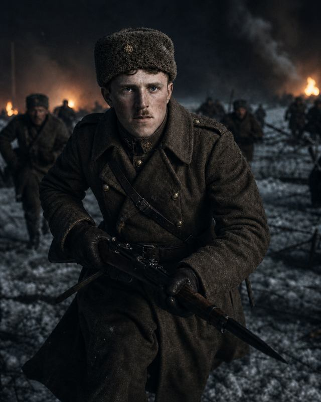
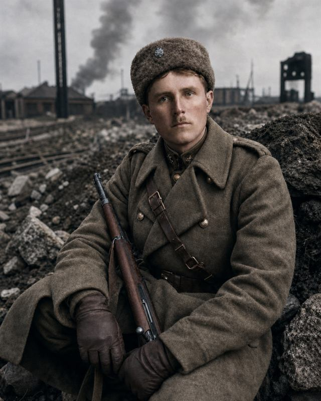
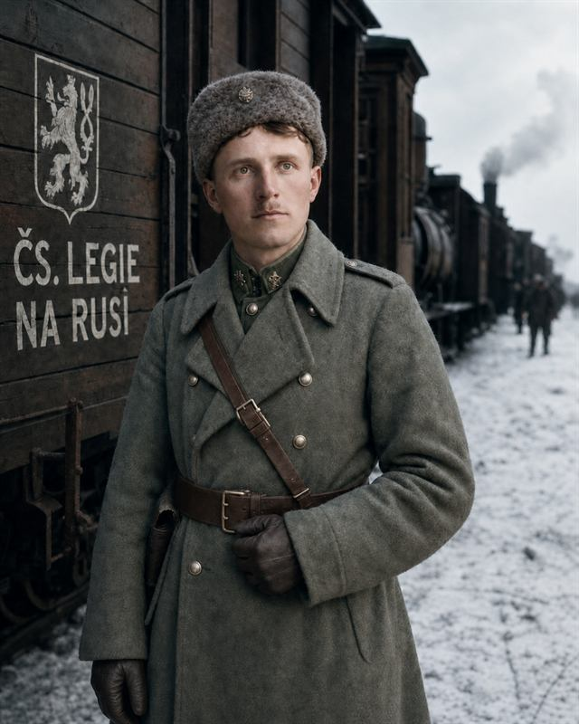
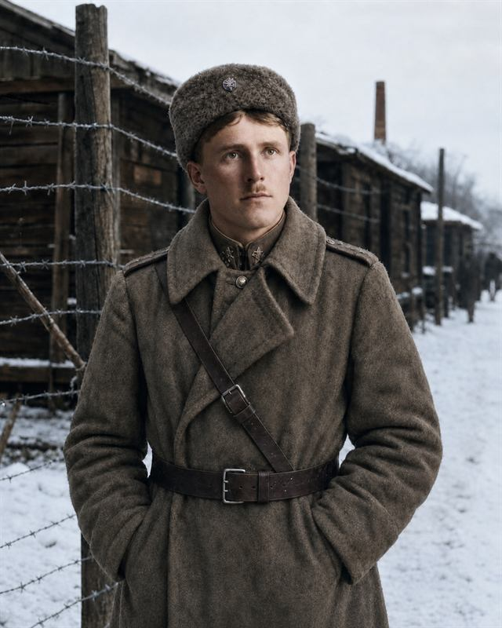
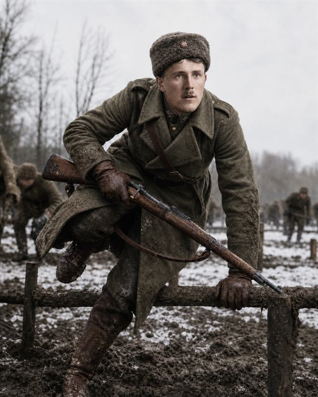
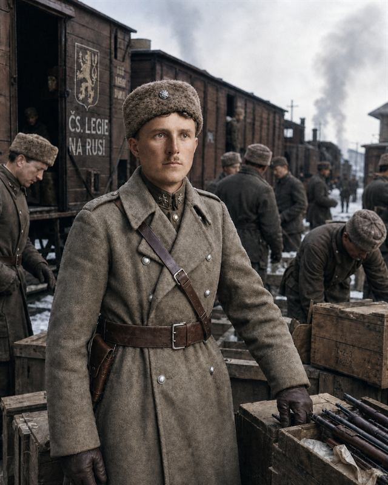
Životopisná osa
Časová osa vybírá okamžiky, kde se Žižkův život opravdu láme: škola, zajetí, legie, první republika, rok 1938 a poslední boj v Praze.
Válka ho odvedla k olomouckému 54. pěšímu pluku. Zajetí u Stanislavi ale otevřelo druhou dráhu: ruské legie, 7. střelecký pluk Tatranský a nakonec elitní I. úderný prapor.
Po návratu dokončil maturitu, vedl čety i technickou rotu a střídal posádky od Domažlic po Valašské Meziříčí. V Chebu přidal moderní kurz leteckého pozorování pro pěchotu.
Strážní prapor XXII držel linii od Dolského mlýna ke kótě Bouřný. Za hlídkami SOS rostl tlak Freikorpsu. Po Mnichovu však přišel rozkaz, který se plnil hůř než útok: odejít bez boje.
Za okupace žil v Praze s manželkou Olgou. Prameny je třeba číst opatrně, protože stejné jméno nesly i jiné odbojové skupiny. Jisté je, že 9. 5. 1945 stál na dejvické barikádě.
Pramenná vrstva
Interaktivní trasa
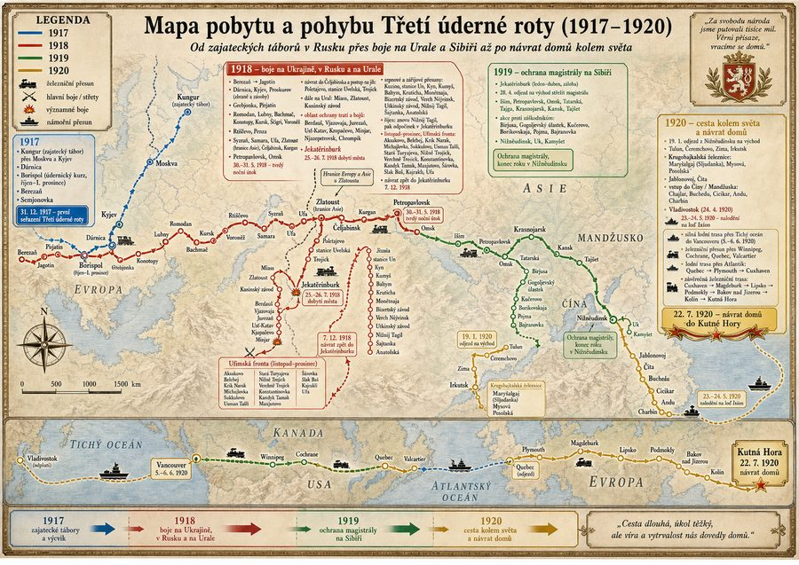
Interaktivní čtečka
Text románu zůstává beze změn. Čtečka jen přidává vyhledávání, poznámky, média a rychlou cestu k místům, kde se objevuje Žižka.
Slovník čtení
Když narazíte na hodnost, místo, útvar nebo pramennou zkratku, slovník rychle vrátí kontext. Propojuje román, legie, rok 1938 i poslední boj v Praze.
Archiv